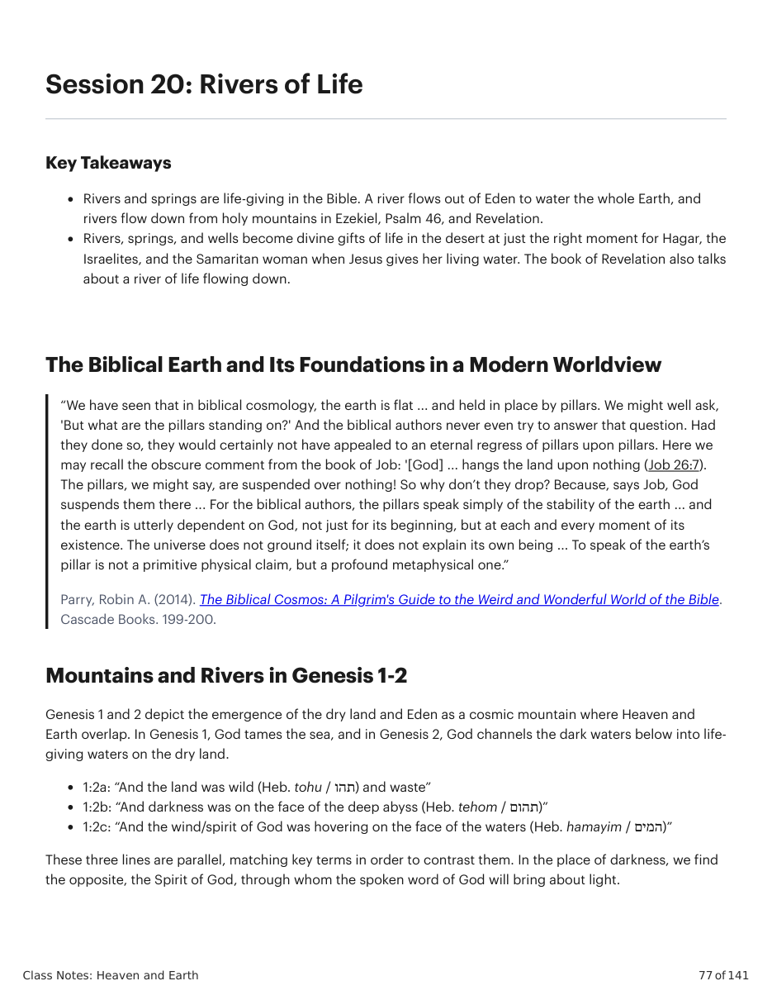
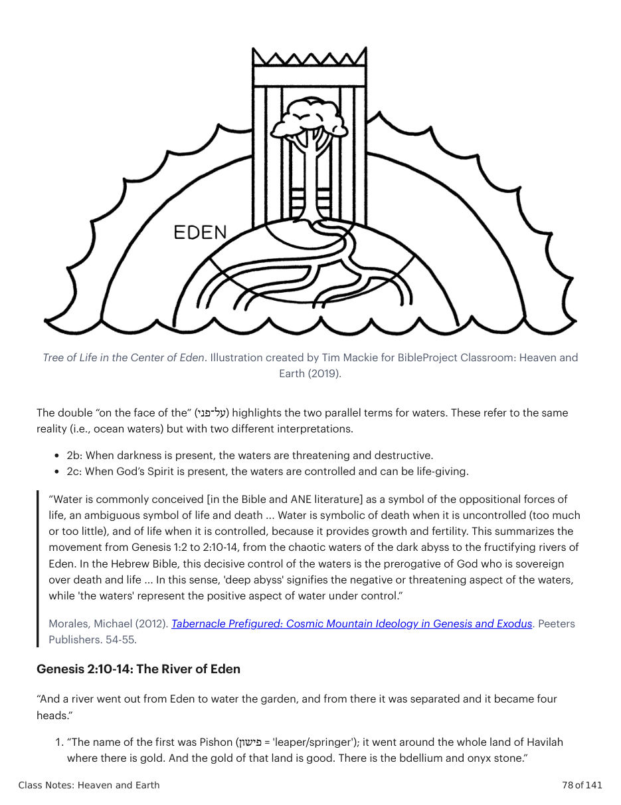
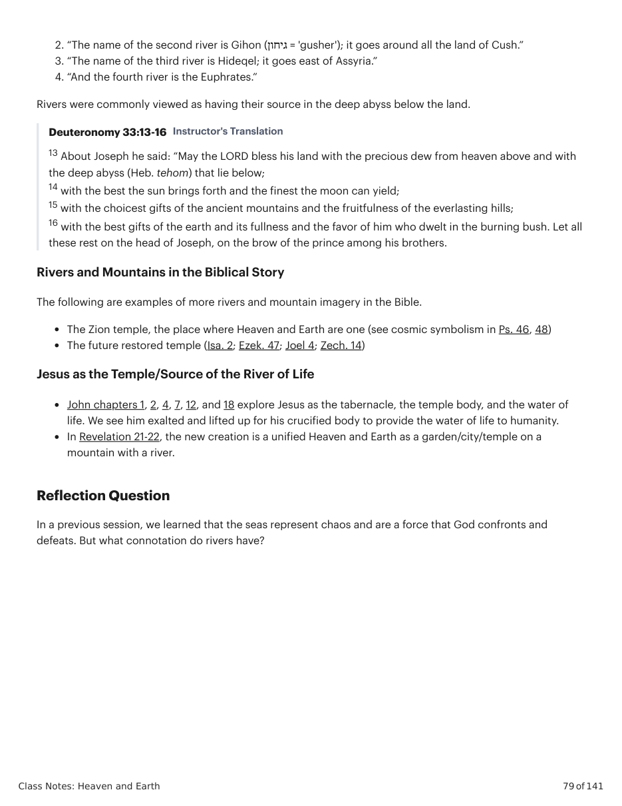

Parry, Robin A. (2014). The Biblical Cosmos: A Pilgrim's Guide to the Weird and Wonderful World of the Bible.
Cascade Books. 199-200. Mountains and Rivers in Genesis 1-2 Genesis 1 and 2 depict the emergence of the dry land and Eden as a cosmic mountain where Heaven and Earth overlap. In Genesis 1, God tames the sea, and in Genesis 2, God channels the dark waters below into life- giving waters on the dry land. 1:2a: “And the land was wild (Heb. tohu / תהו) and waste” 1:2b: “And darkness was on the face of the deep abyss (Heb. tehom / תהום)” 1:2c: “And the wind/spirit of God was hovering on the face of the waters (Heb. hamayim / המים)” These three lines are parallel, matching key terms in order to contrast them. In the place of darkness, we find the opposite, the Spirit of God, through whom the spoken word of God will bring about light. Tree of Life in the Center of Eden. Illustration created by Tim Mackie for BibleProject Classroom: Heaven and
Earth (2019).
The double “on the face of the” (על־פני) highlights the two parallel terms for waters. These refer to the same reality (i.e., ocean waters) but with two different interpretations. 2b: When darkness is present, the waters are threatening and destructive. 2c: When God’s Spirit is present, the waters are controlled and can be life-giving. “Water is commonly conceived [in the Bible and ANE literature] as a symbol of the oppositional forces of life, an ambiguous symbol of life and death ... Water is symbolic of death when it is uncontrolled (too much or too little), and of life when it is controlled, because it provides growth and fertility. This summarizes the movement from Genesis 1:2 to 2:10-14, from the chaotic waters of the dark abyss to the fructifying rivers of Eden. In the Hebrew Bible, this decisive control of the waters is the prerogative of God who is sovereign over death and life ... In this sense, 'deep abyss' signifies the negative or threatening aspect of the waters, while 'the waters' represent the positive aspect of water under control.”
Morales, Michael (2012). Tabernacle Prefigured: Cosmic Mountain Ideology in Genesis and Exodus. Peeters
Publishers. 54-55. Genesis 2:10-14: The River of Eden “And a river went out from Eden to water the garden, and from there it was separated and it became four heads.” 1. “The name of the first was Pishon (פישון = 'leaper/springer'); it went around the whole land of Havilah where there is gold. And the gold of that land is good. There is the bdellium and onyx stone.” 2. “The name of the second river is Gihon (גיחון = 'gusher'); it goes around all the land of Cush.” 3. “The name of the third river is Hideqel; it goes east of Assyria.” 4. “And the fourth river is the Euphrates.” Rivers were commonly viewed as having their source in the deep abyss below the land. Deuteronomy 33:13-16 Instructor's Translation 13 About Joseph he said: “May the LORD bless his land with the precious dew from heaven above and with the deep abyss (Heb. tehom) that lie below; 14 with the best the sun brings forth and the finest the moon can yield; 15 with the choicest gifts of the ancient mountains and the fruitfulness of the everlasting hills; 16 with the best gifts of the earth and its fullness and the favor of him who dwelt in the burning bush. Let all these rest on the head of Joseph, on the brow of the prince among his brothers. Rivers and Mountains in the Biblical Story The following are examples of more rivers and mountain imagery in the Bible. The Zion temple, the place where Heaven and Earth are one (see cosmic symbolism in Ps. 46, 48) The future restored temple (Isa. 2; Ezek. 47; Joel 4; Zech. 14) Jesus as the Temple/Source of the River of Life John chapters 1, 2, 4, 7, 12, and 18 explore Jesus as the tabernacle, the temple body, and the water of life. We see him exalted and lifted up for his crucified body to provide the water of life to humanity. In Revelation 21-22, the new creation is a unified Heaven and Earth as a garden/city/temple on a mountain with a river.
In a previous session, we learned that the seas represent chaos and are a force that God confronts and defeats. But what connotation do rivers have?


